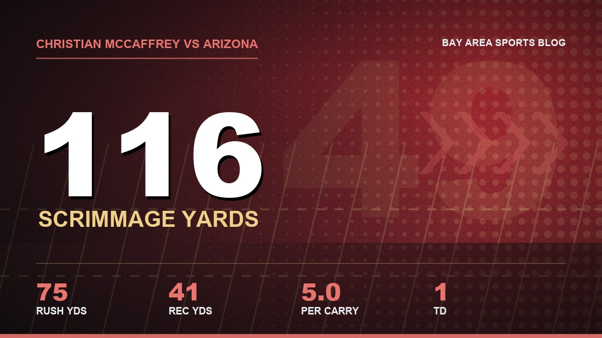

No Receivers? No Problem. McCaffrey, Juice and Jordan Watkins Keep This Offense Rolling
Pearsall, Stribling, Kirk and Robinson are on IR, Evans is banged up, and the 49ers are averaging almost 33 a game anyway. Christian McCaffrey and Kyle Juszczyk are why, and Jordan Watkins just proved the point.

Every week somebody in my fantasy league texts me the 49ers injury report like it's a threat. "No receivers left lol." "Who's Brock throwing to, the waterboy?" I get it. If you just read the list, it looks like a team that should be scrambling for points.
Ricky Pearsall's on IR with the knee. De'Zhaun Stribling had ankle surgery. Christian Kirk's on IR with the calf. Demarcus Robinson, who caught a touchdown in Melbourne, went on IR the day before the Arizona game. Brandon Aiyuk didn't even report. And Mike Evans left Arizona on a cart with his ribs and is questionable for Denver.
And we're 3 and 0 with 98 points in three games. 27, 35, 36. Just think about that one for a minute before you text me again.
Christian McCaffrey ran that Arizona game
I keep coming back to the fourth quarter on Sunday. The defense had let a 23 to 6 lead turn into a fistfight, Levi's was getting quiet in that nervous way it gets, and I was standing in my kitchen not eating the nachos I'd made because my stomach wouldn't let me.
So what does Kyle do? He gives it to McCaffrey. Ten yards right tackle. Nine yards around the right end. Then on the drive that actually won the thing, Christian catches one for 11 with under three minutes left, rips off 12 up the middle with about two minutes left, and a few plays later Brock hits Kittle for a 20 yard touchdown that turned out to be the winner. When everybody in the building knows we need a first down, Christian's still the guy who gets it.
His line: 15 carries, 75 yards, 5.0 a pop, a touchdown, plus four catches for 41. That's 116 yards from scrimmage on a day when Purdy threw for 297, and honestly the 116 mattered more, because they came when the other team was trying to steal the game. You can't take him away. If you play two deep, he runs through your linebackers. If you load the box, he leaks out of the backfield and you've got a linebacker chasing the best receiving back of his generation down the sideline.

Juice doesn't need the ball to wreck you
Then there's Kyle Juszczyk, and this is where people who only look at box scores completely lose the plot.
Juice had zero catches against Arizona. Zero. Two targets. If you're grading him off a stat sheet you'd say he didn't do anything. Except go back to that second touchdown drive, 93 yards, the one that put us up two scores in the first quarter. Purdy throws one over the middle to Juice, Jack Gibbens can't stay with him and gets flagged for pass interference, and the drive keeps rolling until Evans catches a 23 yard touchdown. No catch for Juice. Still a big play.
Box scores lie about fullbacks.
And every one of those McCaffrey runs I just told you about? Watch who's walking into the hole first. He's 35 years old and still showing up in the hole like a guy who's mad he didn't make the roster. The week before, against Miami, he caught two for 27 and a touchdown, and I swear you could hear the JUICE chant through my TV like it was 2019 again.
There isn't a fullback in this league who matters to an offense the way he matters to ours. He's a blocker, a checkdown, a decoy, and a guy linebackers have to account for on every single snap. I've been saying the 49ers should never let him leave for about six years straight, and I'll keep saying it until he's in a gold jacket in my head, whether Canton agrees or not.
Jordan Watkins and the guys nobody drafted in fantasy
Now the receivers. With Robinson going on IR the day before the game, somebody had to step in, and it was Jordan Watkins. Two catches. That's it. But they went for 60 yards, and both of them mattered.
The first was a 26 yarder on that same 93 yard touchdown drive. The second was the one that made me jump off the couch: 17 seconds left in the half, Purdy throws it deep left, Watkins catches it for 34 and gets pushed out at the Arizona 39. That set up Eddy Pineiro for a 57 yard field goal, and we went into the locker room with three points that came out of nowhere. In a 36 to 30 game? Those three points were huge.
And don't forget the craziest play of the day. Purdy throws a little two yard dump off to Evans on our own 20, Evans flips it to Deebo, and Deebo goes 80 yards for a touchdown. Officially Deebo has zero catches in the box score and an 80 yard touchdown. That's this offense in one play. Kyle will find a way to get the ball to somebody in space, and he doesn't care who.
Shanahan's system doesn't need Jerry Rice
I'll probably get yelled at for this, but I don't care. You don't need the best receiver in the world to put up big numbers in Kyle Shanahan's offense. You need guys who run the route where it's drawn, catch the ball, and keep going.
We've seen it for years. Jauan Jennings was a seventh round pick and went for over 900 yards in 2024. Demarcus Robinson, a veteran nobody was excited about, caught a 39 yard touchdown in Australia. Now it's Watkins. Next week it might be Jacob Cowing or whoever gets called up from the practice squad. The scheme gets guys open with motion and play action and McCaffrey sucking the linebackers up, and the receiver's job is mostly to not mess it up.
And I mean that as a compliment to the coach, not a knock on the players. When Robinson went down I didn't panic for one second. I just figured somebody else would show up, and somebody did.
Next man up. Every time.
Look, I'm not saying receivers don't matter. I'd love to have a healthy Pearsall back. I want Evans out there on Sunday. But give this coaching staff McCaffrey, Kittle, Juice and Purdy, and pretty much any guy who can catch the ball, and they're going to put up something around 30. They've done it three weeks in a row with half the receiver room in the training room.
So what about Denver?
Denver's the best defense we've seen, and if Evans can't go, the receiver group is going to be thin again. I already went through the matchups in my Broncos preview, and my answer hasn't changed: run it at them, use Juice, throw it to McCaffrey and Kittle, and let whoever's left at receiver catch whatever comes their way.
The full list of who's out is on the 49ers injury report, and if you want to see how bad the receiver room got in camp, check the roster and depth chart. Why I think Purdy deserves more credit than the system gets is in my Purdy column, and every game this year is on the 2026 schedule hub.
My fantasy buddy still thinks we've got no receivers. Fine. We've also got 98 points.
More coverage: 49ers · NFL · Bay Area Sports Blog home